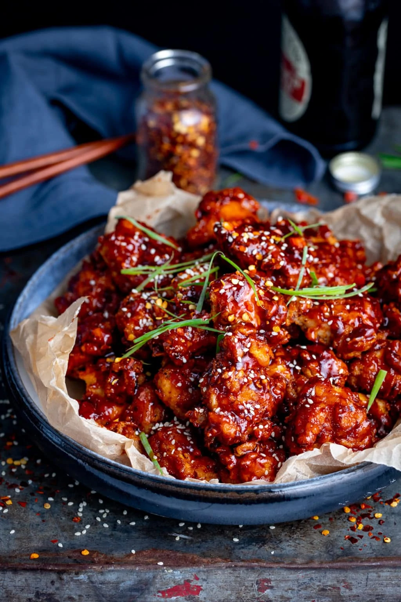

Korean Fried Chicken

Description
This Korean Fried Chicken is a crispy double fried chicken marinated in gochujang sauce.
Simple to make, but complex in flavor.
- chicken
- vegetable oil
- salt
- flour
- gochujang
- egg
- milk
- Mix your egg and milk in a bowl.
- Coat your chicken in flour and dip it in the bowl we mixed.
- Get a pot filled with vegetable oil and throw the chicken in there.
- After the chicken is golden brown throw it in the gochujang sauce and salt.